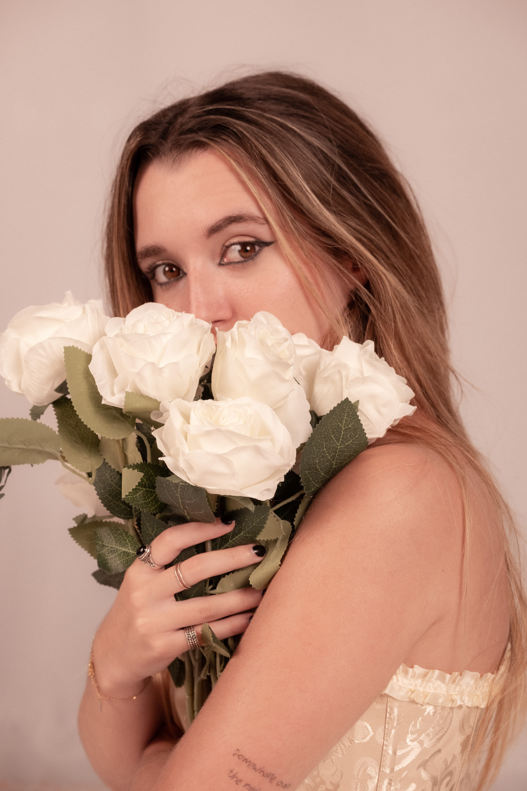

CLAUDINE
Art Direction / Photography / Mixed Media
Between softness and darkness.
Not everything beautiful is untouched.
Not everything broken is lost.
Somewhere between light and shadow,
something begins to bloom.